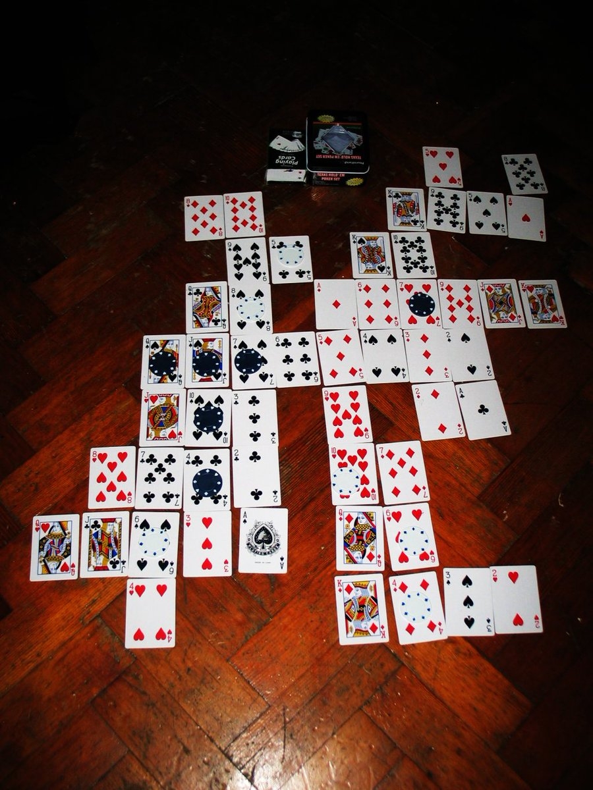
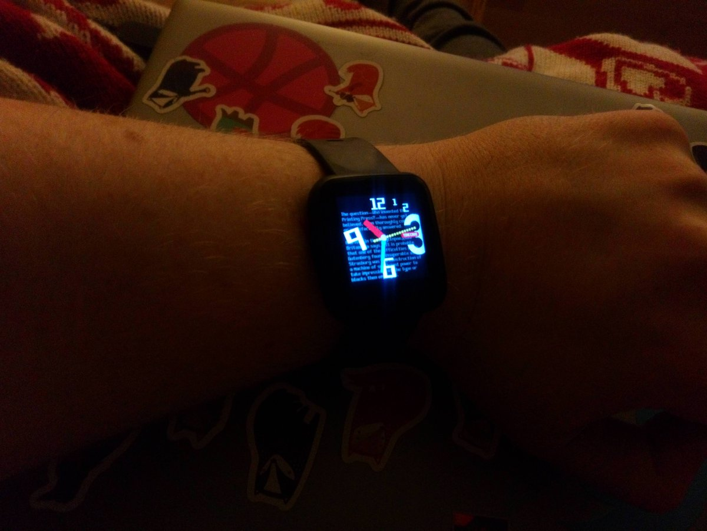
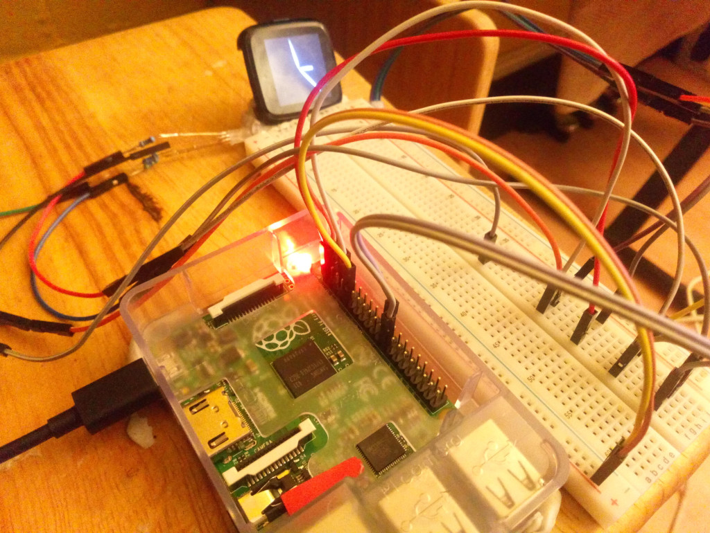

13 years ago I woke up with this game design almost fully formed in my head http://xixs.com/agincards That may sound unlikely but I had been thinking/trying to design a simple card solitaire placement game like it since I was a kid. So I guess it just finally clicked :) 
https://twitter.com/RaymondDoerr/status/1218317590721957888 @RaymondDoerr Exactly, there are a large amount of puzzle designs created, tested and honed to the point that their final form could easily be created for hardware 10 years out of date.
It is somewhat saddening how little respect there is for that sort of game design work.
https://twitter.com/RaymondDoerr/status/1218285213501075457 @RaymondDoerr In the late 70s and early 80s we had computers capable of Tetris or Match3 style puzzle games but these did not exist in any form until the mid 80s at the earliest.
That's some really easy pickins :)
https://twitter.com/wetgenes/status/1218254164259758080 @DavidGlaude @pimoroni @adafruit Glancing at the code it would be 25% faster if you just switched to 444 from 565 per pixel and I would consider adding simple dithering to reduce the color resolution loss from doing that.
https://twitter.com/DavidGlaude/status/1218248377617539072 @DavidGlaude @pimoroni @adafruit Yup, that looks like partial updates :)
I think you could also dynamically switch between 444,565,888 color modes depending on the size of the current frame update.
You are only choosing the transport format, they all update the same back buffer so can be intermixed.
https://twitter.com/wetgenes/status/1218211392714690560 @pimoroni With a PI the obvious speedup would be to render to a local buffer and then make sure to only squirt areas that have changed over the SPI.
https://twitter.com/pimoroni/status/1218204359219204098 @pimoroni This looks like the same ST7789 controller as on the #PineTime but the PI has much faster SPI speeds. You can see some recent notes I made about driving that chipset with an NRF52 at http://xixs.com/blog/2020-01-16-pinetime-lcd-driver-notes/ and the code might be useful if you want to drive it yourself.
Some notes about driving the #PineTime LCD as fast as we can http://xixs.com/blog/2020-01-16-pinetime-lcd-driver-notes/ @thepine64
PineTime LCD Driver Notes
This is a (bad) video of interlaced update, so half the display updated each frame, just to give an idea of the speed.
You can find the driver code here, https://github.com/xriss/timecake/blob/master/src/sys/lcd_pine.c What follows are some notes on why it does things the way it does.
Fortunately we have a reasonable bit of documentation for the PineTime LCD driver, https://wiki.pine64.org/images/5/54/ST7789V_v1.6.pdf It is overly verbose with only a few pages of useful information and I have read it through repeatedly. Unfortunately I could not see any way of doing something clever, we are at the other end of a rather slow serial interface with limited control over the format of data we can send across. So bandwidth combined with the lack of display configuration options is a real problem.
The LCD has a 320x240 display buffer with 666 bits of RGB color output resolution, this buffer is used to drive the LCD hardware at 60-30fps. We can send data into this buffer across the serial interface as 444, 565 or 888 bits of RGB. Since we are mostly bound by the speed of transfer, I recommend only using the 444 mode. Remember, even if you use the 888 mode then it will be truncated to 666 bits before it is displayed. This may cause ugly banding unless pre dithered to 666 color.
I attempted a 240x120, half resolution / double height pixels mode by tweaking the scroll registers every scan line. This seems impossible as we do not have access to the blanking interrupt pin and even if we did the documentation (and my tests) suggests that changes are ignored mid frame. Which is a shame as it would allow for faster and double buffered full screen updates.
There is still a double buffered mode we could use but it involves throwing away 80 display lines of pixels. The LCD has a 320x240 buffer on its end of the serial interface so by only displaying half of it at once (160x240) we can update the other half of memory without changes being visible until we flip the screen using the scroll registers. I did not consider this worthwhile as it would still only be able to manage around 4fps, but it would be easy enough to add.
So at best we can manage a few frames per second, lets say 4fps, for a full screen update. Obviously we can double that with interleaved updates but that's as good as it gets and we can not even double buffer these full screen updates. They look more like wipes than animation flips.
The actual display code ended up rather simple, we do not have enough RAM for fullscreen buffers on the CPU so we use a shadertoy style system with a hook function called for each x,y pixel returning a 24bit color value, 0xrrggbb or -1 for transparent. We even try and interleave the calls to this function with the serial data transfer so we are using the time we would be waiting for data to transmit to the LCD to work out what color the next pixel will be.
This allows us to craft simple functions that take an XY location and return an RGB color, these do not require any ram buffers as the data is sent immediately to the LCD.
Finally an important note about hardware : One thing I did discover is that using NRF_SPI0 to send data to the LCD means that we can not use NRF_TWIM0 to talk to the I2C devices since they both use the same hardware. Not a problem, it just means we have to use NRF_TWIM1 for the I2C devices. This is probably documented somewhere in the NRF52 chip documentation but I have no idea where and found it out the hard way.
I declare phase one of the TimeCake project complete as we have a working @thepine64 watch :)
Code etc can be found at http://github.com/xriss/timecake 
DeadPi
I have successfully killed my first PI. This brings the dead hardware total of the timecake project to 2, the other casualty is one of the watches.
That poor PIs light will never be lit again and the chip gets rather hot when you plug it in.
I'm not sure what killed the first watch it mostly still works but I can not connect to the SWD pins, one of which seem to be shorted. So they are both probably casualties of poking the wrong wire in the wrong place.
I had been reasonably careful with disconnecting the PI's power before connecting the watch so I think the PI was killed by the watches battery (I was testing the battery % and had it fully charged). This all goes to prove that I should solder some more reasonable connections to the watch before continuing.
Luckily the project is in a working state, with the rom flashed to the watch working as an actual watch. So I think we are going to take a little break from this hardware for a while and come back with some fresh enthusiasm and maybe buy another spare watch just in case. Like most people I have a box of old PI's under the bed so that is not a problem.
https://twitter.com/engineers_feed/status/1216417000823623680 @engineers_feed Reminds me of
https://www.instructables.com/id/The-Incredible-Flying-Paper-Tube/
Which I think was originally from Omni Magazine?
At least I remember learning how to make them from a strange magazine in the 80s and Omni is totally a strange magazine from the 80s :)
The meetup page for the #Bradford #GameDev meetup in a pub never really helped so we are replacing it with
https://groups.io/g/badonkadonk
PLZ to be signup if you want Badonkadonk event reminders in your inbox.
https://twitter.com/andrewcrawshaw/status/1216033504598876167 @andrewcrawshaw @developconf I think we should organize a bi yearly local game dev meet up crash/raid event for the UK.
Every 6 months a different local dev meetup that was going to happen anyway is chosen and everyone is encourageed to travel there from around the country for one glorious night.
:)
https://twitter.com/thomasforth/status/1216012930904469504 @thomasforth That reminds me, I have yet to see a PC attachment that guides the hot air coming out the back and redirects it at your hands to keep them warm.
Technically, something that makes as much sense as yellow tinted gamer glasses.
There has to be a market in exhaust pipe routing :)
"The time needed to generate one random byte of data is unpredictable" -- Objective Product Specification.
Easy tiger, I only wanted one source of entropy.
@magic_bane The other link I gave is direct to a ROM that plays in browser :)
Modern technology, ehh.
https://twitter.com/wetgenes/status/1215749402129829888 Probably all above board, I mean obviously the place I was working for exploded shortly after making it, as games companys tend to do. And its a licensed asset swap sort of thing. Anyway here are two versions for you to compare.
I made this GBA one.
Here's a fun one. So I'm watching this video on the tubes which is every ps2 game released 10 seconds each.
https://www.youtube.com/watch?v=ixeRUJQ5yPc
In the background right and I glance up only to see this random game that looks exactly like an asset swap of one of the games I remember making.